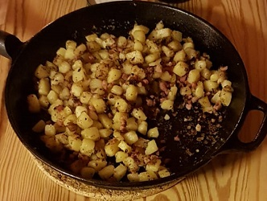

Bratkartoffeln
Zubereitungszeit: 15min
Ergibt: 2 Portionen

- 6 mittelgroße Kartoffeln
- 1 Packung Speck
- Kartoffeln schälen, in Scheiben oder wahlweise in Würfel schneiden
- Kartoffeln ca. 10 min kochen, sodass ssie noch nicht ganz durch sind
- Gekochte Kartoffeln in der Pfanne anbraten, nach 5 min Speck dazu geben
- Ab und zu wenden